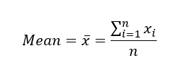
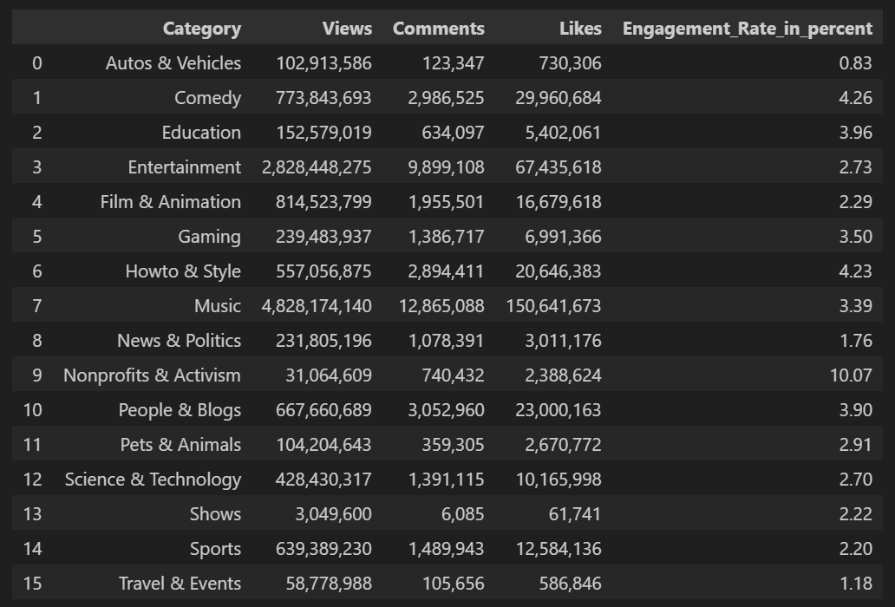

Exploratory Data Analysis: Estimates of Location
Estimates of location are summary statistics that provide information about the central tendency or typical value of a dataset. These statistics help you understand where the data tends to cluster or concentrate.

by Muhammad Reyhan Arighy Data Scientist
Introduction
Summarizing data and estimating central tendency is a fundamental step in data analysis, and while meanThe sum of all values divided by the number of values.
Synonym: average is a commonly used measure of central tendency, it may not always be the most appropriate choice.
Statisticians have developed alternative estimates to the mean to address situations where the mean might not provide a representative measure of central tendency.
Metrics and Estimates
The difference reflects the approach of statistics versus that of data science: accounting for uncertainty lies at the heart of the discipline of statistics, whereas concrete business or organizational objectives are the focus of data science. Hence, statisticians estimate, and data scienctists measure.
Mean
The most basic estimate of location is the mean, or average value. Consider the following set of numbers: [3 5 1 2]. The mean is (3 + 5 + 1 + 2) / 4 = 11 / 4 = 2.75. You will encounter the symbol x̄ (pronounced "x-bar") being used to represent the mean of a sample from a population. The formula to compute the mean for a set of n values x1, x2, ..., xn is:
The convention of capitalizing N when referring to a population and using lowercase n when referring to a sample is indeed a common practice in statistics. This distinction helps clarify whether you are discussing a parameter (population) or a statistic (sample) and is an important aspect of statistical notation.
In data science and related fields, the conventions around N and n may be less strict. While some data scientists may follow the traditional capitalization rules to maintain consistency, others may use them interchangeably because the distinction between population and sample may not always be as critical in data science as it is in formal statistical analysis.
A variation of the mean is a trimmed meanThe average of all values after dropping a fixed number of extreme values.
Synonym: truncated mean, which you calculate by dropping a fixed number of sorted values at each end and then taking an average of the remaining values. Representing the sorted values by x(1), x(2), ..., x(n) where x(1) is the smallest value and x(n) the largest, the formula to compute the trimmed mean with p smallest and largest values omitted is:
Trimmed means are particularly useful in situations where outliers or extreme values can distort the interpretation of the data. For example, in educational assessment, let's say there is a standardized test with a large number of questions, and each question is graded on a scale from 0 to 100. The goal is to calculate a student's overall score on the test. However, some students may provide extreme responses, such as leaving many questions unanswered or guessing randomly, leading to exceptionally low or high scores.
To mitigate the influence of such extreme responses and ensure a more reliable measure of a student's performance, a trimmed mean can be employed. Trimmed means are widely used, and in many cases are preferable to using the ordinary mean (see "Median and Robust Estimates").
Another type of mean is a weighted meanThe sum of all values times a weight divided by the sum of the weights.
Synonym: weighted average, which you calculate by multiplying each data value xi by a user-specified weight wi and dividing their sum by the sum of the weights. The formula for a weighted mean is:
There are two main motivations for using a weighted mean:
Median and Robust Estimates
The medianThe value such that one-half of the data lies above and below.
Synonym: 50th percentile is the middle value in a sorted list of data. If there is an even number of data values, it is the average of the two middle values. It represents the middle point of the dataset when ordered. Compared to the mean, which uses all observations, the median depends only on the values in the center of the sorted data. While this might seem to be a disadvantage, since the mean is more sensitive to the data, there are many instances in which the median is a better metric for location, especially when dealing with datasets that contain extreme values or outliers.
The median is commonly used in various fields, including economics, income distribution analysis, housing prices, and healthcare, where extreme values or outliers are common and can distort the interpretation of data. Let's say we want to look at typical household incomes in neighborhoods around Lake Washington in Seattle. In comparing the Medina neighborhood to the Windermere neighborhood, using the mean would produce different results because Bill Gates lives in Medina. If we use the median, it won't matter how rich Bill Gates is. The position of the middle observation will remain the same.
For some reasons that one uses a weighted mean, it is also possible to compute a weighted medianThe value such that one-half of the sum of the weights lies above and below the sorted data.. As with the median, we first sort the data, although each data value has an associated weight. Instead of the middle number, the weighted median is a value such that the sum of the weights is equal for the lower and upper halves of the sorted list. Like the median, the weighted median is robust to outliers.
Outliers
The median is referred to as a robustNot sensitive to extreme values.
Synonym: resistant estimate of location since it is not influenced by outliersA data value that is very different from most of the data.
Synonym: extreme value (extreme cases) that could skew the results. An outlier is any value that is very distant from the other values in a data set. The exact definition of an outlier is somewhat subjective.
Being an outlier in itself does not make a data value invalid or erroneous as in the previous example with Bill Gates. Still, outliers can be caused by data errors, including recording errors, sensor malfunctions, unit mismatches, or data entry mistakes. In such cases, the presence of outliers may indicate data quality issues that need to be addressed. It's important to identify and investigate outliers in your dataset. Outliers may carry valuable information or insights, especially in scientific research or anomaly detection. They may indicate unusual but real events or phenomena that warrant further examination.
The median is not the only robust estimate of location, and trimmed mean is indeed another widely used and effective method to mitigate the influence of outliers while providing a compromise between the median and the mean. For example, trimming the bottom and top 10 % (a common choice) of the data will provide protection against outliers in all but the smallest data sets. The trimmed mean is robust to extreme values in the data, but uses more data to calculate the estimate for location.
Anomaly Detection
In contrast to typical data analysis, where outliers are sometimes informative and sometimes a nuissance, in anomaly detection the points of interest are the outliers, and the greater mass of data serves primarily to define the "normal" against which anomalies are measured.
Example: Location Estimates of Youtube Views and Engagement Rates
Table below shows data set containing a number of views and associated engagement rate (ratio of total likes and comments per total views) for each category in US Youtube trending videos.
Compute the mean, trimmed mean, and median for the views using Python. To compute mean and median in Python we use Pandas methods of the dataframe. The trimmed mean requires the trim_mean function in scipy.stats.
The mean is bigger than the trimmed mean, which is bigger than the median. This is because the trimmed mean excludes the largest and smallest categories within 10 % from each end. If we want to compute the average engagement rate for the category, we need to use a weighted mean or median to account for different views in the categories. Weighted mean is available with NumPy. For weighted median, we can use the specialized package wquantiles.
In this case, the weighted mean and the weighted median are about the same.
Key Ideas
Further Reading